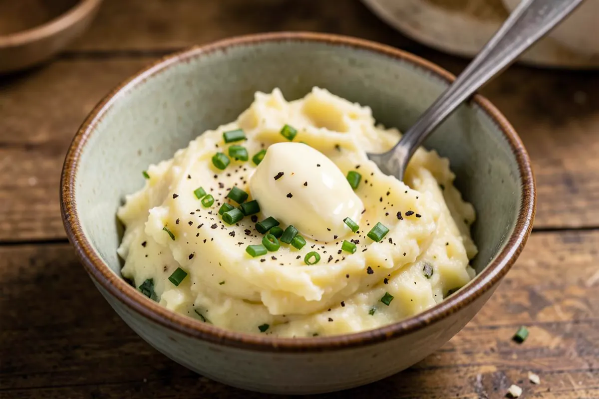

Garlic Herb Mashed Potatoes

Mashed potatoes are simple, but the details matter. Yukon Gold potatoes give a buttery, creamy result without the heaviness of russets, and warming the milk before it goes in keeps the potatoes from seizing.
This version infuses butter with garlic, folds in sour cream for tang and finishes with chives or parsley. Three pounds of potatoes serve eight, which makes it a practical holiday side.
Ingredients
- 3 lb Yukon Gold potatoes, peeled and cut into 1 1/2-inch chunks
- 1 tbsp salt, for the cooking water, plus more to taste
- 4 tbsp (1/2 stick) unsalted butter
- 4 cloves garlic, minced
- 1/2 to 3/4 cup whole milk or half-and-half, warmed
- 1/4 cup sour cream (optional)
- 2 tbsp chopped fresh chives or parsley
- Black pepper, to taste
Instructions
- Put the potatoes in a large pot, cover with cold water by an inch and add 1 tablespoon of salt. Bring to a boil, then simmer for 15 to 20 minutes until a fork slides in easily.
- While the potatoes cook, melt the butter in a small saucepan over low heat. Add the garlic and cook for 1 to 2 minutes until fragrant but not browned. Add the milk and warm gently.
- Drain the potatoes well and return them to the hot pot for 1 minute to steam off excess moisture.
- Mash with a potato masher or ricer. Add the warm butter mixture gradually until you reach the texture you like, then stir in the sour cream if using.
- Fold in the herbs, season with salt and pepper, and serve hot with an extra pat of butter on top.
- Cut the potatoes into even pieces so they cook at the same rate.
- Start in cold water so the potatoes cook evenly.
- Never use a blender or food processor. Overworking releases starch and makes the potatoes gluey.
- Add the liquid a little at a time, since potatoes vary in how much they absorb.
- Stir in 1/2 cup grated Parmesan or sharp cheddar.
- Roast the garlic instead of sautéing it for a sweeter, milder flavor.
- Swap the sour cream for cream cheese for extra richness.
Why this recipe works
Starting the potatoes in cold water means they heat gradually and cook evenly, so the outside does not turn to mush before the centre is tender. A ricer or a potato masher gives a fluffy texture; a food processor or blender overworks the starch and produces a gluey paste.
Tips for success
- Cut the potatoes into even chunks so they finish cooking at the same time.
- Drain them well and let them steam dry for a minute before mashing, so excess water does not dilute the butter.
- Add the warm milk gradually, since potatoes absorb different amounts depending on the variety and the season.
Substitutions that work
- Russet potatoes give a lighter, fluffier mash; Yukon Gold gives a richer, creamier one.
- Half-and-half or whole milk both work. Skim milk makes a thinner mash.
- For a dairy-free version, use olive oil and a dairy-free milk, and skip the sour cream.
Storage and make-ahead
Keep mashed potatoes warm in a covered bowl set over a pan of simmering water, or in a slow cooker on low for up to two hours, stirring occasionally. Leftovers keep for three days and reheat with a splash of milk.
Serving suggestions
Serve with roast turkey, herb roasted chicken or meatloaf, and spoon gravy over the top. They are also the base for a shepherd's pie or a bowl of stew.
Frequently asked questions
Why do my mashed potatoes turn out gluey?
Overworking the starch. Use a masher or ricer, add the butter before the milk, and never use a food processor or an electric mixer for long.
Can I make mashed potatoes ahead of time?
Yes. Make them up to two hours ahead, keep them warm covered over simmering water, and stir in a little extra milk before serving.
Should I peel the potatoes?
Peeling gives a smoother mash. Leaving the skins on adds texture and fibre, which suits a more rustic version, but the result will not be silky.